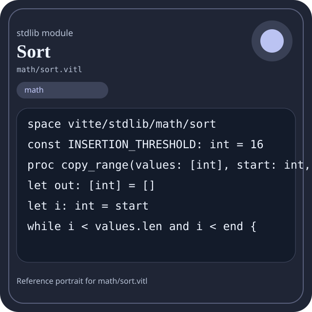

Stdlib module math/sort.vitl
This page is a wiki-style reference for one concrete stdlib file. It explains what the file owns, where it fits in the family, and how to decide whether this is the right surface to depend on.

math/sort.vitl.Family: math
Kind: public stdlib surface
Page style: this reference follows the same “encyclopedic card + portrait + usage contract” logic as the keyword pages, but for stdlib modules.
Summary
- Overview
- Purpose
- Taxonomy
- Implementation profile
- Top-level API inventory
- Position in family
- Declaration map
- Representative signatures
- How to use this module
- User example
- Keyword coverage
- Source shape
- Source landmarks
- Source organization
- Complete API catalog
- Integration boundaries
- Composition guidance
- Relationship table
- Neighbor modules
Overview
| Field | Value |
|---|---|
| Path | math/sort.vitl |
| Family | math |
| Kind | public stdlib surface |
| Line count | 347 |
| Declared procedures | 48 |
| Declared forms/picks | 0 |
`math/sort.vitl` is a public stdlib surface inside the `math` family. It should be read as one focused slice of the broader family responsibility: Arithmetic, algebra, comparison, calculus, geometry, modular arithmetic, number theory, probability, statistics, matrix, and vector helpers.
Purpose
This file should be chosen because of responsibility, not because its name “sounds close enough”. Inside the math family, it carries one focused part of the contract and keeps that responsibility separate from neighboring concerns.
- A scoring engine can compute aggregates in `math` while keeping I/O and transport elsewhere.
- A statistics or matrix chapter should explain the workflow around the computation, not just a single formula.
Taxonomy
Think of this page as a generated encyclopedia entry rather than a hand-written tutorial. The goal is to show what kind of module this is, how dense it is, and what reading strategy makes sense before depending on it.
- Large algorithm surface: this file exposes many procedures and likely acts as a domain toolkit rather than a single thin wrapper.
- Has tuning constants: part of the module behavior is controlled by named constants that document default precision, limits, or policy.
- Minimal top-level dependencies: the module reads as mostly self-contained from its opening declarations.
- Explicit export surface: the file ends with visible export declarations instead of relying only on implicit namespace discovery.
Implementation profile
This profile is inferred directly from the source text. It does not replace reading the file, but it tells you quickly whether the module is mostly declarative, loop-heavy, branch-heavy, or organized around many small exits.
| Signal | Count | What it suggests |
|---|---|---|
if | 14 | Branching density and local decision-making. |
while | 16 | Loop-heavy or iterative implementation style. |
for | 0 | Collection-style traversal at source level. |
match | 0 | Variant-driven branching or grammar-style decoding. |
let | 61 | Local state and intermediate value density. |
give | 57 | Number of explicit exit points and result shaping. |
Top-level API inventory
| Surface | Items |
|---|---|
| Procedures | copy_range, reverse_copy, swap, floor_log2_int, median3_index, is_sorted, is_strictly_sorted, insertion_sort_range, insertion_sort_inplace, insertion_sort, sift_down, heapify |
| Forms | none declared at top level |
| Picks | none declared at top level |
| Constants | INSERTION_THRESHOLD |
| Exports | * |
Imported surfaces
This file does not advertise a top-level `use` surface in its opening declarations. That often means it is either self-contained or an aggregation layer.
Position in family
This file is module 17 of 21 in the math family when ordered by path. By procedure count it ranks 13, and by line count it ranks 15. Those ranks are useful as rough signals of breadth, not as quality judgments.
Declaration map
The declaration map turns raw source into a scan-friendly catalog. It is useful when the file is large enough that a reader wants to orient by kinds of surfaces first.
| Line | Name | Kind | Role |
|---|---|---|---|
| 1 | vitte/stdlib/math/sort | space | Declares the namespace that anchors this file in the stdlib tree. |
| 3 | INSERTION_THRESHOLD | const | Defines a named constant reused across the module. |
| 5 | copy_range | proc | Represents one top-level surface in the file contract and should be read as part of the module boundary. |
| 15 | reverse_copy | proc | Represents one top-level surface in the file contract and should be read as part of the module boundary. |
| 25 | swap | proc | Represents one top-level surface in the file contract and should be read as part of the module boundary. |
| 33 | floor_log2_int | proc | Represents one top-level surface in the file contract and should be read as part of the module boundary. |
| 43 | median3_index | proc | Represents one top-level surface in the file contract and should be read as part of the module boundary. |
| 62 | is_sorted | proc | Represents one top-level surface in the file contract and should be read as part of the module boundary. |
| 73 | is_strictly_sorted | proc | Represents one top-level surface in the file contract and should be read as part of the module boundary. |
| 84 | insertion_sort_range | proc | Represents one top-level surface in the file contract and should be read as part of the module boundary. |
| 100 | insertion_sort_inplace | proc | Represents one top-level surface in the file contract and should be read as part of the module boundary. |
| 104 | insertion_sort | proc | Represents one top-level surface in the file contract and should be read as part of the module boundary. |
| 108 | sift_down | proc | Represents one top-level surface in the file contract and should be read as part of the module boundary. |
| 112 | heapify | proc | Represents one top-level surface in the file contract and should be read as part of the module boundary. |
| 116 | sort_inplace | proc | Represents one top-level surface in the file contract and should be read as part of the module boundary. |
| 134 | heapsort_inplace | proc | Represents one top-level surface in the file contract and should be read as part of the module boundary. |
| 138 | heapsort | proc | Represents one top-level surface in the file contract and should be read as part of the module boundary. |
| 142 | partition | proc | Represents one top-level surface in the file contract and should be read as part of the module boundary. |
| 157 | heapsort_range | proc | Represents one top-level surface in the file contract and should be read as part of the module boundary. |
| 161 | introsort_rec | proc | Represents one top-level surface in the file contract and should be read as part of the module boundary. |
| 165 | quicksort_inplace | proc | Represents one top-level surface in the file contract and should be read as part of the module boundary. |
| 169 | quicksort | proc | Represents one top-level surface in the file contract and should be read as part of the module boundary. |
| 173 | introsort | proc | Represents one top-level surface in the file contract and should be read as part of the module boundary. |
| 177 | merge | proc | Represents one top-level surface in the file contract and should be read as part of the module boundary. |
| 196 | mergesort | proc | Represents one top-level surface in the file contract and should be read as part of the module boundary. |
| 206 | stable_sort | proc | Represents one top-level surface in the file contract and should be read as part of the module boundary. |
| 210 | reverse | proc | Represents one top-level surface in the file contract and should be read as part of the module boundary. |
| 214 | reverse_inplace | proc | Represents one top-level surface in the file contract and should be read as part of the module boundary. |
| 218 | sort_desc | proc | Represents one top-level surface in the file contract and should be read as part of the module boundary. |
| 223 | sort_desc_inplace | proc | Represents one top-level surface in the file contract and should be read as part of the module boundary. |
| 227 | nth_element | proc | Represents one top-level surface in the file contract and should be read as part of the module boundary. |
| 235 | partial_sort | proc | Represents one top-level surface in the file contract and should be read as part of the module boundary. |
| 240 | top_k | proc | Represents one top-level surface in the file contract and should be read as part of the module boundary. |
| 245 | bottom_k | proc | Represents one top-level surface in the file contract and should be read as part of the module boundary. |
| 250 | lower_bound | proc | Represents one top-level surface in the file contract and should be read as part of the module boundary. |
| 262 | upper_bound | proc | Represents one top-level surface in the file contract and should be read as part of the module boundary. |
| 274 | binary_search | proc | Represents one top-level surface in the file contract and should be read as part of the module boundary. |
| 294 | contains_sorted | proc | Represents one top-level surface in the file contract and should be read as part of the module boundary. |
| 298 | sort_int | proc | Represents one top-level surface in the file contract and should be read as part of the module boundary. |
| 299 | sort_i32 | proc | Represents one top-level surface in the file contract and should be read as part of the module boundary. |
| 300 | sort_i64 | proc | Represents one top-level surface in the file contract and should be read as part of the module boundary. |
| 301 | sort_u32 | proc | Represents one top-level surface in the file contract and should be read as part of the module boundary. |
| 302 | sort_u64 | proc | Represents one top-level surface in the file contract and should be read as part of the module boundary. |
| 304 | sort_f64 | proc | Represents one top-level surface in the file contract and should be read as part of the module boundary. |
| 322 | stable_sort_int | proc | Represents one top-level surface in the file contract and should be read as part of the module boundary. |
| 323 | stable_sort_f64 | proc | Represents one top-level surface in the file contract and should be read as part of the module boundary. |
| 324 | sort | proc | Represents one top-level surface in the file contract and should be read as part of the module boundary. |
| 326 | sort_version | proc | Represents one top-level surface in the file contract and should be read as part of the module boundary. |
| 330 | sort_ready | proc | Represents one top-level surface in the file contract and should be read as part of the module boundary. |
| 334 | sort_selftest | proc | Represents one top-level surface in the file contract and should be read as part of the module boundary. |
The table is exhaustive for top-level declarations of the selected kinds. This file declares 50 matching surfaces.
Representative signatures
These signatures are shown in source order so the page keeps the feel of a reference manual, not just a keyword cloud.
const INSERTION_THRESHOLD: int = 16(line 3)proc copy_range(values: [int], start: int, end: int) -> [int] {(line 5)proc reverse_copy(values: [int]) -> [int] {(line 15)proc swap(values: [int], i: int, j: int) -> [int] {(line 25)proc floor_log2_int(value: int) -> int {(line 33)proc median3_index(values: [int], a: int, b: int, c: int) -> int {(line 43)proc is_sorted(values: [int]) -> bool {(line 62)proc is_strictly_sorted(values: [int]) -> bool {(line 73)proc insertion_sort_range(values: [int], start: int, end: int) -> [int] {(line 84)proc insertion_sort_inplace(values: [int]) -> [int] {(line 100)proc insertion_sort(values: [int]) -> [int] {(line 104)proc sift_down(values: [int], start: int, end: int) -> [int] {(line 108)proc heapify(values: [int]) -> [int] {(line 112)proc sort_inplace(values: [int]) -> [int] {(line 116)proc heapsort_inplace(values: [int]) -> [int] {(line 134)proc heapsort(values: [int]) -> [int] {(line 138)proc partition(values: [int], pivot: int) -> [[int]] {(line 142)proc heapsort_range(values: [int], start: int, end: int) -> [int] {(line 157)
The list is intentionally capped here; the source file declares 49 matching signatures in total.
How to use this module
Start by reading the file as an ownership boundary. Ask three questions: what enters this module, what stable types or procedures it exports, and what adjacent module should stay outside of it.
- Read
spaceand top-level imports first so the ownership boundary ofmath/sort.vitlis explicit. - Scan constants before procedures; they often encode precision, limits, or policy assumptions that explain later behavior.
- Traverse procedures in source order; the early helpers usually explain the naming and numeric conventions used later.
- Only after that compare neighbor modules, because the right boundary choice matters more than memorizing one helper name.
User example
This example is generated from the actual stdlib module surface. Its job is not to be the smallest snippet possible; its job is to show a realistic consumer-shaped file that exercises the module and mirrors the language keywords the module itself relies on.
space demo/math_sort
const SAMPLE_LABEL: string = "demo"
proc run_example() -> string {
let entries = copy_range([1, 2, 3], 1, 1)
let ready: bool = is_sorted([1, 2, 3])
let failed: bool = false
let stable: bool = ready and true
let fallback: bool = ready or false
let idx: int = 0
let count: int = 0
while idx < entries.len {
set count = count + 1
set idx = idx + 1
}
if ready {
give "not-ready"
} else {
give "ok"
}
}
export run_exampleKeyword coverage
This table makes the “all keywords of the module” requirement auditable. It compares the detected Vitte keywords in the source file with the generated consumer example above.
| Keyword | Present in module source | Used in generated user example |
|---|---|---|
space | yes | yes |
const | yes | yes |
proc | yes | yes |
let | yes | yes |
set | yes | yes |
if | yes | yes |
else | yes | yes |
while | yes | yes |
give | yes | yes |
export | yes | yes |
true | yes | yes |
false | yes | yes |
and | yes | yes |
or | yes | yes |
The generated snippet exercises every detected Vitte keyword used by this module.
Source shape
space vitte/stdlib/math/sort
const INSERTION_THRESHOLD: int = 16
proc copy_range(values: [int], start: int, end: int) -> [int] {
let out: [int] = []
let i: int = start
while i < values.len and i < end {
set out = out + [values[i]]
set i = i + 1
}
give outThe excerpt is not meant to replace the file. It exists to make the module recognizable at first glance, the same way a Wikipedia infobox helps the reader orient before reading the whole article.
Source landmarks
Large files are easier to retain when they have visible landmarks. When the source contains explicit section banners, they are surfaced here; otherwise the first major declarations are used as anchors.
- Line 1:
space vitte/stdlib/math/sort - Line 3:
const INSERTION_THRESHOLD: int = 16 - Line 5:
proc copy_range(values: [int], start: int, end: int) -> [int] { - Line 15:
proc reverse_copy(values: [int]) -> [int] { - Line 25:
proc swap(values: [int], i: int, j: int) -> [int] { - Line 33:
proc floor_log2_int(value: int) -> int { - Line 43:
proc median3_index(values: [int], a: int, b: int, c: int) -> int { - Line 62:
proc is_sorted(values: [int]) -> bool {
Source organization
When a file carries its own internal chaptering, those chapters usually reveal the intended reading order better than a flat symbol list. This section reconstructs that organization from the source itself.
File surfaces
Top-level items: 51. Procedures: 48. Data surfaces: 0. Constants: 1.
First visible names: vitte/stdlib/math/sort, INSERTION_THRESHOLD, copy_range, reverse_copy, swap, floor_log2_int, median3_index, is_sorted, is_strictly_sorted, insertion_sort_range
Complete API catalog
This catalog is the exhaustive file-level index for the module. It is intentionally closer to a generated encyclopedia appendix than to a tutorial summary.
Constants
| Line | Name | Signature | Role |
|---|---|---|---|
| 3 | INSERTION_THRESHOLD | const INSERTION_THRESHOLD: int = 16 | Defines a named constant reused across the module. |
Procedures
| Line | Name | Signature | Role |
|---|---|---|---|
| 5 | copy_range | proc copy_range(values: [int], start: int, end: int) -> [int] { | Represents one top-level surface in the file contract and should be read as part of the module boundary. |
| 15 | reverse_copy | proc reverse_copy(values: [int]) -> [int] { | Represents one top-level surface in the file contract and should be read as part of the module boundary. |
| 25 | swap | proc swap(values: [int], i: int, j: int) -> [int] { | Represents one top-level surface in the file contract and should be read as part of the module boundary. |
| 33 | floor_log2_int | proc floor_log2_int(value: int) -> int { | Represents one top-level surface in the file contract and should be read as part of the module boundary. |
| 43 | median3_index | proc median3_index(values: [int], a: int, b: int, c: int) -> int { | Represents one top-level surface in the file contract and should be read as part of the module boundary. |
| 62 | is_sorted | proc is_sorted(values: [int]) -> bool { | Represents one top-level surface in the file contract and should be read as part of the module boundary. |
| 73 | is_strictly_sorted | proc is_strictly_sorted(values: [int]) -> bool { | Represents one top-level surface in the file contract and should be read as part of the module boundary. |
| 84 | insertion_sort_range | proc insertion_sort_range(values: [int], start: int, end: int) -> [int] { | Represents one top-level surface in the file contract and should be read as part of the module boundary. |
| 100 | insertion_sort_inplace | proc insertion_sort_inplace(values: [int]) -> [int] { | Represents one top-level surface in the file contract and should be read as part of the module boundary. |
| 104 | insertion_sort | proc insertion_sort(values: [int]) -> [int] { | Represents one top-level surface in the file contract and should be read as part of the module boundary. |
| 108 | sift_down | proc sift_down(values: [int], start: int, end: int) -> [int] { | Represents one top-level surface in the file contract and should be read as part of the module boundary. |
| 112 | heapify | proc heapify(values: [int]) -> [int] { | Represents one top-level surface in the file contract and should be read as part of the module boundary. |
| 116 | sort_inplace | proc sort_inplace(values: [int]) -> [int] { | Represents one top-level surface in the file contract and should be read as part of the module boundary. |
| 134 | heapsort_inplace | proc heapsort_inplace(values: [int]) -> [int] { | Represents one top-level surface in the file contract and should be read as part of the module boundary. |
| 138 | heapsort | proc heapsort(values: [int]) -> [int] { | Represents one top-level surface in the file contract and should be read as part of the module boundary. |
| 142 | partition | proc partition(values: [int], pivot: int) -> [[int]] { | Represents one top-level surface in the file contract and should be read as part of the module boundary. |
| 157 | heapsort_range | proc heapsort_range(values: [int], start: int, end: int) -> [int] { | Represents one top-level surface in the file contract and should be read as part of the module boundary. |
| 161 | introsort_rec | proc introsort_rec(values: [int]) -> [int] { | Represents one top-level surface in the file contract and should be read as part of the module boundary. |
| 165 | quicksort_inplace | proc quicksort_inplace(values: [int]) -> [int] { | Represents one top-level surface in the file contract and should be read as part of the module boundary. |
| 169 | quicksort | proc quicksort(values: [int]) -> [int] { | Represents one top-level surface in the file contract and should be read as part of the module boundary. |
| 173 | introsort | proc introsort(values: [int]) -> [int] { | Represents one top-level surface in the file contract and should be read as part of the module boundary. |
| 177 | merge | proc merge(a: [int], b: [int]) -> [int] { | Represents one top-level surface in the file contract and should be read as part of the module boundary. |
| 196 | mergesort | proc mergesort(values: [int]) -> [int] { | Represents one top-level surface in the file contract and should be read as part of the module boundary. |
| 206 | stable_sort | proc stable_sort(values: [int]) -> [int] { | Represents one top-level surface in the file contract and should be read as part of the module boundary. |
| 210 | reverse | proc reverse(values: [int]) -> [int] { | Represents one top-level surface in the file contract and should be read as part of the module boundary. |
| 214 | reverse_inplace | proc reverse_inplace(values: [int]) -> [int] { | Represents one top-level surface in the file contract and should be read as part of the module boundary. |
| 218 | sort_desc | proc sort_desc(values: [int]) -> [int] { | Represents one top-level surface in the file contract and should be read as part of the module boundary. |
| 223 | sort_desc_inplace | proc sort_desc_inplace(values: [int]) -> [int] { | Represents one top-level surface in the file contract and should be read as part of the module boundary. |
| 227 | nth_element | proc nth_element(values: [int], index: int) -> int { | Represents one top-level surface in the file contract and should be read as part of the module boundary. |
| 235 | partial_sort | proc partial_sort(values: [int], count0: int) -> [int] { | Represents one top-level surface in the file contract and should be read as part of the module boundary. |
| 240 | top_k | proc top_k(values: [int], k: int) -> [int] { | Represents one top-level surface in the file contract and should be read as part of the module boundary. |
| 245 | bottom_k | proc bottom_k(values: [int], k: int) -> [int] { | Represents one top-level surface in the file contract and should be read as part of the module boundary. |
| 250 | lower_bound | proc lower_bound(values: [int], needle: int) -> int { | Represents one top-level surface in the file contract and should be read as part of the module boundary. |
| 262 | upper_bound | proc upper_bound(values: [int], needle: int) -> int { | Represents one top-level surface in the file contract and should be read as part of the module boundary. |
| 274 | binary_search | proc binary_search(values: [int], needle: int) -> int { | Represents one top-level surface in the file contract and should be read as part of the module boundary. |
| 294 | contains_sorted | proc contains_sorted(values: [int], needle: int) -> bool { | Represents one top-level surface in the file contract and should be read as part of the module boundary. |
| 298 | sort_int | proc sort_int(values: [int]) -> [int] { give sort_inplace(values) } | Represents one top-level surface in the file contract and should be read as part of the module boundary. |
| 299 | sort_i32 | proc sort_i32(values: [int]) -> [int] { give sort_inplace(values) } | Represents one top-level surface in the file contract and should be read as part of the module boundary. |
| 300 | sort_i64 | proc sort_i64(values: [int]) -> [int] { give sort_inplace(values) } | Represents one top-level surface in the file contract and should be read as part of the module boundary. |
| 301 | sort_u32 | proc sort_u32(values: [int]) -> [int] { give sort_inplace(values) } | Represents one top-level surface in the file contract and should be read as part of the module boundary. |
| 302 | sort_u64 | proc sort_u64(values: [int]) -> [int] { give sort_inplace(values) } | Represents one top-level surface in the file contract and should be read as part of the module boundary. |
| 304 | sort_f64 | proc sort_f64(values: [f64]) -> [f64] { | Represents one top-level surface in the file contract and should be read as part of the module boundary. |
| 322 | stable_sort_int | proc stable_sort_int(values: [int]) -> [int] { give stable_sort(values) } | Represents one top-level surface in the file contract and should be read as part of the module boundary. |
| 323 | stable_sort_f64 | proc stable_sort_f64(values: [f64]) -> [f64] { give sort_f64(values) } | Represents one top-level surface in the file contract and should be read as part of the module boundary. |
| 324 | sort | proc sort(values: [int]) -> [int] { give sort_inplace(values) } | Represents one top-level surface in the file contract and should be read as part of the module boundary. |
| 326 | sort_version | proc sort_version() -> string { | Represents one top-level surface in the file contract and should be read as part of the module boundary. |
| 330 | sort_ready | proc sort_ready() -> bool { | Represents one top-level surface in the file contract and should be read as part of the module boundary. |
| 334 | sort_selftest | proc sort_selftest() -> bool { | Represents one top-level surface in the file contract and should be read as part of the module boundary. |
Exports
| Line | Name | Signature | Role |
|---|---|---|---|
| 347 | * | export * | Re-exports surfaces that the module wants to expose as part of its public boundary. |
Integration boundaries
Within math, this file should remain focused. If a future helper changes the host boundary, scheduling boundary, or data-shape boundary, it probably belongs in a neighbor module instead of being added here by convenience.
- Family responsibility: Arithmetic, algebra, comparison, calculus, geometry, modular arithmetic, number theory, probability, statistics, matrix, and vector helpers.
- Family architecture role: Use `math` when the transformation itself is the feature. This family exists so algorithmic intent stays visible and testable.
Composition guidance
Choose this module when
- Choose
math/sort.vitlwhen the main question is owned by this module rather than by transport, storage, orchestration, or user-interface code. - A scoring engine can compute aggregates in `math` while keeping I/O and transport elsewhere.
- A statistics or matrix chapter should explain the workflow around the computation, not just a single formula.
Pause before extending it when
- Avoid extending this file when the new helper mostly changes the boundary to host I/O, runtime coordination, or foreign integration instead of staying inside
math. - Check nearby modules such as
math/algebra.vitl,math/arithmetic.vitl,math/arrays.vitlbefore adding convenience wrappers here.
Relationship table
This table keeps the page closer to a real encyclopedia entry: a module is easier to understand when compared with its nearest alternatives in the same family.
| Neighbor | Procedures | Data surfaces | Why compare it |
|---|---|---|---|
math/algebra.vitl | 14 | 0 | Shares the same family boundary but carries a distinct slice of responsibility. |
math/arithmetic.vitl | 72 | 2 | Shares the same family boundary but carries a distinct slice of responsibility. |
math/arrays.vitl | 83 | 2 | Shares the same family boundary but carries a distinct slice of responsibility. |
math/calculus.vitl | 56 | 3 | Shares the same family boundary but carries a distinct slice of responsibility. |
math/comparison.vitl | 47 | 0 | Shares the same family boundary but carries a distinct slice of responsibility. |
math/complex.vitl | 49 | 0 | Shares the same family boundary but carries a distinct slice of responsibility. |
math/geometry.vitl | 72 | 0 | Shares the same family boundary but carries a distinct slice of responsibility. |
math/logic.vitl | 20 | 0 | Shares the same family boundary but carries a distinct slice of responsibility. |